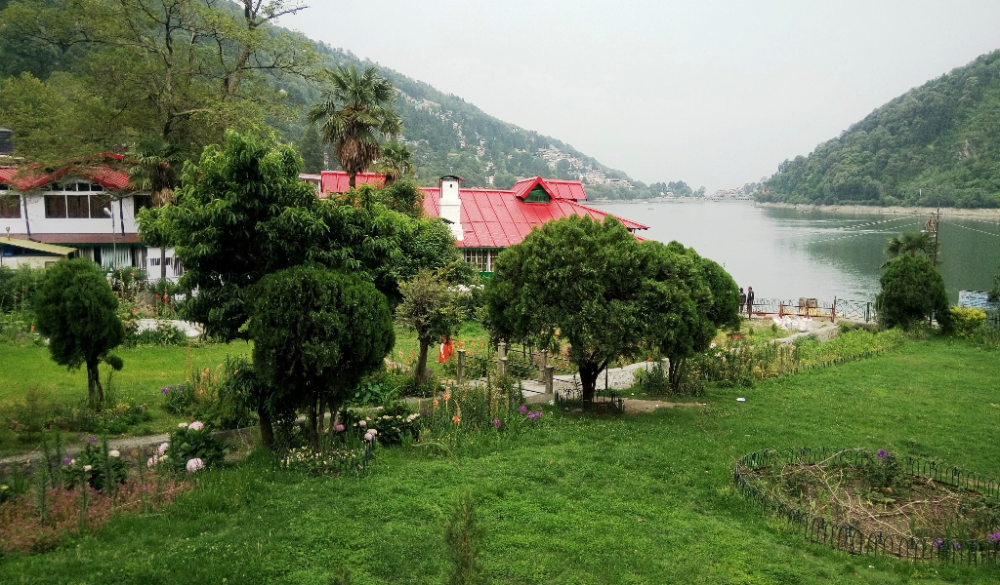

Images
KUTCH
The Rann of Kutch is the only large flooded grasslands zone in the Indomalayan realm. The area has desert on one side and the sea on the other enables various ecosystems, including mangroves and desert vegetation. Its grassland and deserts are home to forms of wildlife that have adapted to its often harsh conditions.
MANALI
Besides natural charm and unparalleled beauty, Manali is known for its unlimited adventure opportunities, the famous Hadimba Temple, the scenic Rohtang Pass, the snow-laden Solang Valley and its delightful culinary scene.
MYSORE
Mysore Palace, also called Amba Vilas Palace, is one of the most magnificent and largest palaces in India. Situated in the southern state of Karnataka, it used to be the official residence of the Wodeyar Dynasty, the rulers of Mysore from 1399 to 1950

NAINITAL
Nainital is famous for the Naini Lake, the amazing view and the pleasant weather. Some of the other places of tourist interest are the Mall, now known as the Govind Ballabh Pant Marg. You can find restaurants, offices and hotels all located in the Mall.

TAJMAHAL
It was built by Mughal Emperor Shah Jahan in memory of his wife Mumtaz Mahal with construction starting in 1632 AD and completed in 1648 AD, with the mosque, the guest house and the main gateway on the south, the outer courtyard and its cloisters were added subsequently and completed in 1653 AD.
UDAIPUR
That's how the city of Udaipur, which lies on the slopes of Aravalli Hills, came into being. Jaisamand Lake has earned fame as the second largest man-made lake in Asia. The lake covers an area of 87 km² when full, and it is 102 feet deep. The artificial lake was the brainchild of Maharana Jai Singh in the 17th century.